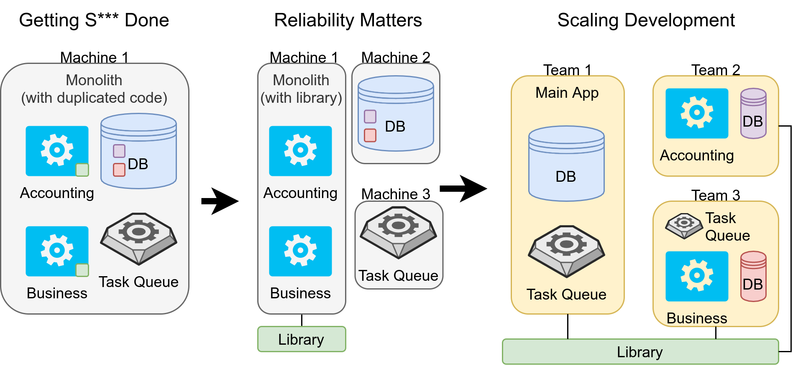

Shared code can be in a library or in a service. Image by Martin Thoma.
Shared code can be in a library or in a service. Image by Martin Thoma.
Preventing code duplication is a software development principle called DRY — Don’t Repeat Yourself. DRY is important because duplicated code usually means way more code that needs to be maintained. If you need to fix a bug, you need to fix it in all duplicated places. If you need to extend the capabilities, you need to do it in multiple parts of the code. When a new developer adjusts one part of the duplicated code and forgets to adjust the other places, the situation gets more complicated.
There are two very different ways to keep your code DRY: Put the shared code in a library or put it in a service. Eric Knipp calls this “shared capability” (source), which already shows that there is an abstraction difference. When you interact with services, you typically don’t want to care about the implementation details of that service. In a library, you might think more about runtime complexity or even jump into the code once in a while.
After reading this article, you will know what the differences between a library and a service are and when you should use one or another. Let’s start!
The differences

A library is shared code that gets deployed with each application. So the library is part of the application and runs on the same machine as the application. A library is accessed via function calls.
In contrast, a service has its own infrastructure. This means it has its own machine, but also logging, monitoring, alerting, potentially an on-call team to fix issues. It gets deployed independently of the applications. Updates can be rolled out without the users of the service noticing that there was a change at all.
Typically, when I interact with a service I like to keep that interaction in one part of my code. I like to write an own module for each service I interact with. This module only takes care of the service interaction. In some cases, services provide such modules, e.g. the boto3 library for interacting with AWS services. What I want to say: If you create a service, you might end up creating a service and a small library.
Let’s dive into the different arguments for one solution or the other!
#1: Speed of Calls
Function calls on the local machine are executing in a few nanoseconds whereas network requests take a few milliseconds. You can expect network requests to take 1,000,000 times longer than the internal function call.
Please keep in mind that this is only covering the communication part, not the actual work. If you want to compute the hundredth billionth digit of pi, the communication speed is dwarfed by the workload. Hence the speed of calls is just an argument if the workload of the call is fast. If it is, this point clearly goes to a library.
#2: Reliability of Calls
Networks fail all the time. CPU instructions can also fail, but this is so rare that most developers can safely ignore this case for all of their lives.
If you have network connections, you need to deal with timeouts. You need to deal with unavailable services. For this reason, commercial services typically provide a service level agreement (SLA). With an SLA you can get a grasp if the service could be offline for too long or for a time that might severely impact your own SLA.
This point clearly goes to libraries.
#3: Infrastructure
A service typically comes with its own infrastructure. It has its own machine. This means you have to take care of one more machine than in the library case. But it doesn’t end there. If you have a service, you need to make sure you have logging, monitoring, alerting, and potentially an on-call team in place.
This makes creating a library more straightforward than creating a service.
#4: Development Overhead
A core reason why we try to follow the DRY principle is to keep development and maintenance costs low. If we create a service, it comes with a lot of overhead compared to a library.
On the one hand, there is the already mentioned infrastructure cost. On the other hand, you now have to think about secrets management and authentication/authorization. How do you make sure that only authorized users can access the new service?
#5: Scalability
You can scale applications horizontally or vertically. Scaling vertically means buying a bigger machine, scaling horizontally means buying a second machine. Buying a bigger machine is trivial and cheap until a certain point. From that point it becomes impossible. If you’re lucky, you never feel the need to scale vertically. Scaling vertically is way more complicated and you need to spend development time on it, which typically makes it way more expensive.
If you have a separate service, you might already be closer to an architecture that allows you to scale vertically. However, this is not a strong argument for a service as you need to take care of the infrastructure of the service. You’re just paying the cost earlier — the infrastructure argument.
#6: Flexibility in Development
Different problems require different solutions. You might even want to switch programming languages for parts of your code because the community in one area is way stronger. While Python and many other programming languages offer foreign function interfaces (FFIs), it might be simpler to completely encapsulate that part by a different service.
Please note that I see flexibility in development as a strong argument, but lack of knowledge of how FFIs work as a weak argument. If you have different teams working on the different topics anyway and if the overhead caused by the network is not relevant, go for the service.
#7: Shared State
If we have a stateless part of the code, it’s an indicator that a library might be a good solution. If you have a shared state, maybe a service is better.
One specific case I’m currently thinking about is an external service that might not be as reliable or fast as I would like it to be. It needs to be wrapped in a local “caching” layer that also abstracts away some of the complexity of the external service.
 Image by Martin Thoma
Image by Martin Thoma
In this case, it’s not so clear if the library option is better or worse than the application option. The handling of data makes me tend to use a service, but then I would need to deal with the unreliabilities of a network. And it would certainly take longer to access that data.
Library vs Service: Some simple Examples
The world is complex and I cannot give you a 5-step guide to decide if you should use a service or a library. In cases like the one above, the situation is not so clear. But there are simple cases:
- Pure algorithms, no shared state: If you only want to share algorithms or maybe some constants (e.g. HTTP Status Codes, Country names/codes, currencies, timezones), it’s a pretty clear indicator that you want a library. Examples that pop to my mind are Numpy, Scipy, Tensorflow,
- Algorithms with lots of data: The Google maps service has complex functionality such as “What is the address closest to this GPS point?” or “What is the fastest route from A to B?” combined with lots of data to fuel those algorithms. The service is heavy, needs regular updates of the data, the infrastructure to make this possible is crazy complex. The applications which make use of this are very simple: Draw my running route. Display the fastest route in my navigation system. Calculate the area of my neighbors' property. Writing a service to remove the burden of the heavy infrastructure is a good idea.
- Lots of memory needed: If you have a part of the code that constantly needs a lot of memory, you might want to put it on its own machine. This way you might keep things vertically scalable for longer. And in some cases, like machine learning applications which only do predictions, it is trivial to scale: Just spin up another machine and serve requested in a round-robin fashion (or similar). You don’t have a shared state, just the model which needs to be in memory. All translation and OCR services are good examples.
- Only shred state, no algorithms: You might consider just giving direct database access. Please note that this comes with its own problems and it’s very unlikely that this is a good solution in the long run. It might be an acceptable intermediate solution.
Transitions
Big software projects are typically not created from scratch but evolve over time. It starts with the “Getting Stuff Done” phase in which developers have everything on their local machine or a hosted web service.
If it’s something serious, it gets to the “Reliability Matters” phase. In this phase, developers start thinking about how to deal with a bigger amount of users, how to deploy in a way that doesn’t disrupt users, multiple environments like local/development/staging/production, logging, monitoring, and alerting. Developers start to run things on multiple machines, e.g. the database on a different one than the application and especially CPU intensive stuff on another one. This got way simpler in the past years due to AWS.
At some point, the need to scale development arises. If you have dozens of developers, you need to make sure that not everybody needs to know about everything. You need to Scale Development. You need to partition the software. Software can be partitioned by the type of value they provide. The teams have a clearly defined responsibility and own their tech stack — the code, the infrastructure, the operations. They need to talk with their clients and they need to define their interfaces.
As an image, it might look like this:
Image by Martin Thoma
A transition I have seen a couple of times is to create a monolith first to get the business going. When the company grows, they structure the monolith by business functionality. For example, there might be modules dealing with accounting and others dealing with analytics. When the monolith becomes really hard to maintain because everything is dependant on everything else, (micro) services are factored out of the monolith.
An intermediate solution I’m currently thinking about is the problem of the (potentially unreliable) external service described above. It would be possible to first create a library solution where the different applications could have different parts of the state. Potentially a small amount of data will be in both applications. The data which is in multiple applications would make a move from a library solution to a service solution hard as the synchronization mechanism has to be considered.
Summary
Libraries and Services allow you to keep your code DRY (don’t repeat yourself). Libraries are more integrated into the application and building them comes with a lower upfront cost. Services provide a clear separation on the infrastructure level, but you need to think about the issues of network requests.
Going from a library to a service is trivial in many cases. Going from a service to a library can be completely infeasible after a while.